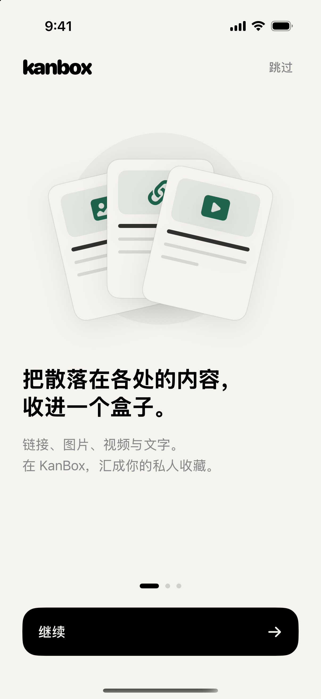

灵感笔记
把周末还给自己
生活灵感

喜欢来自各处。
收藏，留在一处。
从系统分享菜单收录链接或图片，也可以粘贴链接、使用快捷指令。剪贴板发现链接时，先由你确认，再开始收录。
读取可用的标题、正文、作者与媒体，尽量保留内容本来的样子。
写一点文字，添几张本地图片，成为属于自己的灵感笔记。
仍可保存原始链接，之后重新解析，或回到原网站查看。
慢一点，去散步。留一点时间，给生活里还没有名字的喜欢。
生活灵感点击体验收录反馈，示例不会保存个人数据。
不只是一长串收藏链接。用标签和合集留下线索，按来源或内容类型筛选，再用搜索找回那一条。
网格、列表、瀑布流与画廊，用你习惯的方式浏览。
生活灵感
阅读清单
生活灵感
阅读清单
生活灵感
阅读清单
点选标签试试整理。这里的文字与图形为网站原创示例，不是平台解析结果。
用自己的分类，组织自己的喜欢。
把重要的留下，把想找的找回来。
看图或读文，都有适合的视图。
文字认真读，图片放大看。可用的视频和实况照片，在 App 里继续欣赏；想分享时，再整理成一张自己的分享图。
保留可用正文与阅读层次，支持原生选字与文内链接。
01 / READ全屏浏览与缩放，查看图集；支持可用实况照片的播放与保存。
02 / VIEW播放可解析的媒体，支持离线视频副本。离线状态以本机文件可用为准。
03 / PLAY编辑分享图，选择图片比例与样式，再保存或交给系统分享。
04 / SHARE第三方平台的内容可用性受登录权限、页面变化及网络影响；各平台支持的媒体能力不同。
原来那些微小的喜欢，过了一阵子，还是喜欢。
生活灵感随机回顾交互示意 · 使用原创样例
有些喜欢不急着派上用场，只是值得留下。让随机回顾和桌面小组件，把它们带回你的日常。
在 App 首页三连击 Logo，从历史收藏里遇见一条久违的内容。
小组件可展示最近、星标、合集或固定内容，每个组件单独配置。
支持可用来源的作者订阅与最新内容预览，由你选择是否正式收录。
收藏与个人笔记主要存放在设备上。当前 App 未接入广告或第三方行为分析 SDK。
iCloud 数据库可用时通过 CloudKit 同步；不可用时保存在本机，状态可在设置中查看。
主动导出、导入自己的收藏与笔记。离线视频副本保留在当前设备，不随收藏数据库同步。
Kanbox 是 iOS / iPadOS 原生的私人收藏与灵感收集 App。它把链接、图片、视频与文字集中起来，提供整理、阅读、媒体浏览、分享图和回顾功能。
不能保证。平台登录要求、反爬限制、页面变化与媒体权限都会影响结果。各平台能力不同；解析失败时可以保存原始链接，之后重试或回到原网站查看。
不会。来源列表与预览用于临时查看，需要你明确选择收录后才进入收藏库，也不会仅因预览而自动离线下载。部分平台需要在 App 内登录，并受平台权限与验证影响。
拟定免费版 ¥0，Pro 月度 ¥18、年度 ¥128、永久 ¥198。免费版拟保留最多 20 条解析完成的内容，Pro 解除数量限制；购买与限制目前均未启用。详见预计收费标准。
目前没有公开的 App Store 或 TestFlight 下载入口，使用开发签名方式安装。网页中的互动是功能示意；如希望了解安装方式，可以通过下方安装咨询联系开发者。
当前 App 没有用于接收收藏内容的开发者业务服务器。解析和加载媒体会向对应内容平台发起网络请求；启用 iCloud 数据库时，通过 Apple 的 CloudKit 同步。详情见隐私说明。